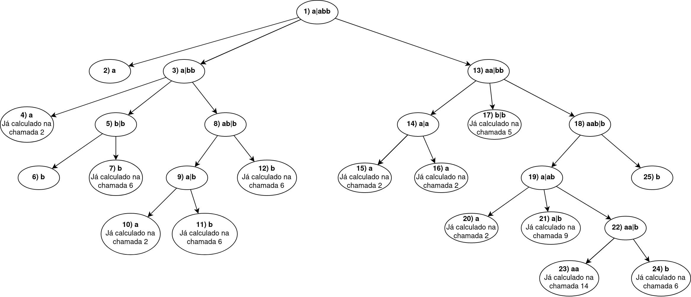

ContextFreeLanguagesRecognition (context_free_languages_recognition v0.1.0)
This module implements strings recognition for context free languages. Is divided in two parts:
- A set of funcions to make the transformation of the input context free grammar into an equivalent Chomsky Normal Form grammar.
- Another set of functions to implement the CYK algorithm to determine if the input string is accepted by the converted Chomsky Normal Form grammar.
A grammar is said to be in Chomsky Normal Form if all of its production rules are of the form: A -> BC or A -> a. The transformation of the input grammar
into an equivalent Chomsky Normal Form grammar is based on a central function. It receives the non terminals, terminals and production rules and applies
a set of changes in order to accomplish the transformation. The changes consist of removing null productions,removing unit productions, sanitizing
productions (remove duplicates and dumb productions), changing right hand side terminals adding a new production for them (when applicable) and
changing right hand side non terminal productions with length larger or equal 3. After all these changes, the new grammar is a Chomsky normal form grammar
equivalent to the input grammar.
Some conventions were applied to make the validation and transformation process easier. The start symbol will always be S. The valid terminals are
all the lower case letters of the latin alphabet. The valid non terminals are all the upper case letters of the latin alphabet, except the T and V.
The new production rules made for the righ hand side terminals are constructed as Tx -> x. The new production rules made for the right hand side non
terminals bigger than or equal 3 are constructed with the Vn non terminal, iex. B -> ABC generates B -> AV1, V1 -> BC.
The CYK algorithm is a parsing algorithm for context free grammars, used to determine if a string is accepted by the grammar. The input grammar must
be in the Chomsky Normal Form. The algorithm is based in dynamic programming, and it's worst case running time is O(n^3*|G|). Basically the CYK split the word
into two parts the prefix and suffix and check the production rules of them and join to see if there is a formation that can generate the joined non terminal final element
if there is then add to a list of possible formation rule when splited there.And after that he continues to split the word in ever possible position and do this.
After all splits then he join all solution found and check if the start symbol is there. if it is then that word can be generated with this production rules.
Link to this section Summary
Functions
Central function to perform the Chomsky Normal Form transformation. Receives the input grammar parameters and uses the pipeline operator to sequentially call the transformation functions with the input parameters. Returns the new grammar, equivalent to the one from the input, but in CNF.
Check the rules that produce this decomposition of word at specific position and their subsequentials.
I got a top-bottom aproach so I get the whole word first and try to find the subtring production rules. (if image is too small click to view image in another tab) This image represent the function calling the top one first. Represented as "1) a|abb":
Returns a specification to start this module under a supervisor.
Determines if a char is a non terminal. Returns true if is a non terminal, and false otherwise.
Determines if a char is string representation of a integer. Returns true if is an integer, and false otherwise.
Determines if a char is a terminal. Returns true if is a terminal, and false otherwise.
Recognise the word with a context free language.
Removes the null productions from the production rules recursivelly. The null productions are represented by {"N", ""}. Returns the new production rules.
Removes the unit productions from the production rules recursivelly. The unit productions are represented by {"N", "N"}. Returns the new production rules.
Sanitizes the production rules, removing duplicated rules and rules of the form A -> A. Returns the new production rules.
This function start the Agent and initialize with two list one containg the profuction rules, and the another containing words already checked.
Changes the productions with non terminals on the right hand side and length greater or equal 3. If there is a rule mapping a non terminal to three or more non terminals, this rule is broken into two or more new rules.
The new rules are generated with the non terminal V followed by an index. Iex: {"S", "ABCD"} is broken into [{"S", "AV1"}, {"V1", "BV2"}, {"V2", "CD"}}].
The return of this function is a map with the new production rules and the new non terminals.
Changes the productions with terminals on the right hand side. If there is a rule mapping a non terminal to a terminal, no additional rules are generated.
Otherwise, a new rule is produced for each non terminal found on the right hand side, on the form {"Tx", "x"}, and the rhs terminals are then substituted for the equivalent new generated terminal.
The return of this function is a map with the new production rules and the new non terminals.
Link to this section Functions
cfg_to_cnf(non_terminals, terminals, production_rules)
Central function to perform the Chomsky Normal Form transformation. Receives the input grammar parameters and uses the pipeline operator to sequentially call the transformation functions with the input parameters. Returns the new grammar, equivalent to the one from the input, but in CNF.
Parameters
- non_terminals: The list of non terminals of the input grammar.
- terminals: The list of terminals of the input grammar.
- production_rules: A list of tuples representing the production rules. The form o the tuples is
{"S", "aB"}, where the first argument is the left hand side of the production rule, and the second argument the right hand side of the production rule.
check_decomposition(word, split_at)
Check the rules that produce this decomposition of word at specific position and their subsequentials.
Parameters
- word: The word that want to analyze the decomposition.
- split_at: The position of word where is going to be splited.
check_word(word)
I got a top-bottom aproach so I get the whole word first and try to find the subtring production rules. (if image is too small click to view image in another tab) This image represent the function calling the top one first. Represented as "1) a|abb":
- The "1)" represent the order of calling the function but not necessary the returning order because in this case the 1) is the last to return.
- The "|" represent where I'm spliting the word

Parameters
- word: The word that want to analyze with the production rule.
child_spec(arg)
Returns a specification to start this module under a supervisor.
See Supervisor.
is_non_terminal(char)
Determines if a char is a non terminal. Returns true if is a non terminal, and false otherwise.
Parameters
- char: The char to be evaluated.
is_str_integer(char)
Determines if a char is string representation of a integer. Returns true if is an integer, and false otherwise.
Parameters
- char: The char to be evaluated.
is_terminal(char)
Determines if a char is a terminal. Returns true if is a terminal, and false otherwise.
Parameters
- char: The char to be evaluated.
recognise_word(grammar, word)
Recognise the word with a context free language.
Parameters
- grammar: Grammar in context free langage.
- word: The word that want to analyze with the grammar.
remove_null_productions(production_rules)
Removes the null productions from the production rules recursivelly. The null productions are represented by {"N", ""}. Returns the new production rules.
Parameters
- production_rules: A list of tuples representing the production rules. The form o the tuples is
{"S", "aB"}, where the first argument is the left hand side of the production rule, and the second argument the right hand side of the production rule..
remove_unit_productions(production_rules)
Removes the unit productions from the production rules recursivelly. The unit productions are represented by {"N", "N"}. Returns the new production rules.
Parameters
- production_rules: A list of tuples representing the production rules. The form o the tuples is
{"S", "aB"}, where the first argument is the left hand side of the production rule, and the second argument the right hand side of the production rule..
sanitize_productions(production_rules)
Sanitizes the production rules, removing duplicated rules and rules of the form A -> A. Returns the new production rules.
Parameters
- production_rules: A list of tuples representing the production rules. The form o the tuples is
{"S", "aB"}, where the first argument is the left hand side of the production rule, and the second argument the right hand side of the production rule..
start(production_rules)
This function start the Agent and initialize with two list one containg the profuction rules, and the another containing words already checked.
Parameters
- production_rules: the production rules in chomsky Normal Form.
variable_non_terminal_mapper(map, index \\ 1)
Changes the productions with non terminals on the right hand side and length greater or equal 3. If there is a rule mapping a non terminal to three or more non terminals, this rule is broken into two or more new rules.
The new rules are generated with the non terminal V followed by an index. Iex: {"S", "ABCD"} is broken into [{"S", "AV1"}, {"V1", "BV2"}, {"V2", "CD"}}].
The return of this function is a map with the new production rules and the new non terminals.
Parameters
- %{:production_rules => production_rules, :non_terminals => non_terminals}: A map with the production_rules and non_terminals to be changed.
- index: The index used to generate the new non terminals
Vn. Starts with 1 and is incremented for eachVngenerated.
variable_terminal_mapper(production_rules, non_terminals, terminals)
Changes the productions with terminals on the right hand side. If there is a rule mapping a non terminal to a terminal, no additional rules are generated.
Otherwise, a new rule is produced for each non terminal found on the right hand side, on the form {"Tx", "x"}, and the rhs terminals are then substituted for the equivalent new generated terminal.
The return of this function is a map with the new production rules and the new non terminals.
Parameters
- production_rules: A list of tuples representing the production rules. The form o the tuples is
{"S", "aB"}, where the first argument is the left hand side of the production rule, and the second argument the right hand side of the production rule. - non_terminals: The list of non terminals of the input grammar.
- terminals: The list of terminals of the input grammar.